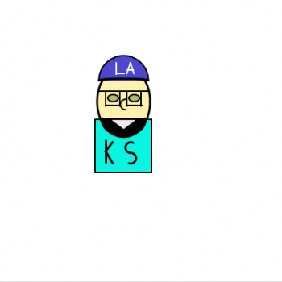
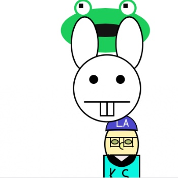
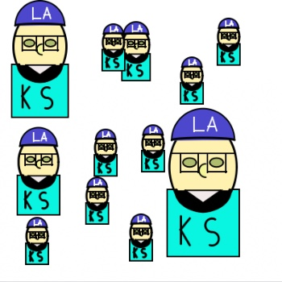

|
---- | |
---- | |
---- | |
|---|
This page is dedicated to the Javascript Programs that I will be creating in My CS class.
Here you can find all the different finished projects that I will work on and see the skills that I have learned being applied.
Sullivan_Bitmoji |
Sullivan Bitmoji Dancing |
Sullivan_Bitmoji_Race |
|---|---|---|
Bitmoji Dancing with Functions |
Bitmoji Racing with Functions |
Bitmoji Resizing with Functions |